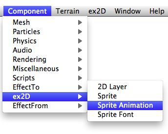
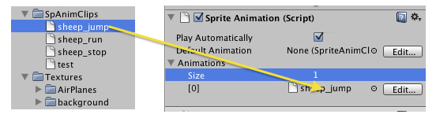

To play sprite animation clip, you need a Sprite Animation Component in your GameObject. First Create an empty GameObject in the scene in Unity. Select the GameObject and choose the Menu Item: Component → ex2D → Sprite Animation

After you add the Sprite Component, it will also add Mesh Renderer, Mesh Filter, Sprite and Layer2D components.
You can drag sprite animation clips to the exSpriteAnimation Component:

Once you add the Sprite Animation Clip in the exSpriteAnimation Component. You can play the animation by its name in your script. Here is an example:
... SpriteAnimation spanim = GetComponent<SpriteAnimation>(); spanim.Play("run"); ...